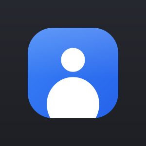

바탕화면 위에 웹캠을 띄우는 Windows 오버레이
배경 제거 · 인물 추적 · 피부 보정 — 전부 이 PC 안에서, 인터넷 없이.
방송이나 화상회의, 강의 녹화를 할 때 내 얼굴만 화면 위에 따로 띄우고 싶을 때 쓰는 앱입니다. 창은 테두리가 없고 원하는 모양으로 잘리며, 배경을 지우면 바탕화면 위에 사람만 떠 있는 것처럼 보입니다.
투명 · 흐리게 · 단색 · 이미지. 사람만 남깁니다. 머리카락 경계는 가이디드 필터로 실제 윤곽에 맞춥니다.
움직여도 화면 가운데를 유지하는 오토 프레이밍. 따라오는 속도와 잡는 크기를 1~10으로 조절합니다.
매끄럽게 · 피부톤(차갑게~따뜻하게) · 밝기. 슬라이더를 움직이는 내내 실시간으로 반영됩니다.
원형·사각형, 8가지 비율(1:1, 16:9, 9:16 숏폼 등), 투명도, 테두리 두께와 색.
항상 맨 위에 있으면서 포커스를 뺏지 않습니다. 클릭 통과를 켜면 창 너머를 그대로 조작할 수 있습니다.
다른 앱을 쓰는 중에도 숨기고, 뒤집고, 설정을 열 수 있습니다.
영상이 이 PC를 떠나지 않습니다. 배경 제거에 쓰는 인물 분리 모델은 기기 안에서 돌아갑니다. 계정도, 로그인도, 서버 통신도 없습니다.
이건 마케팅 문구가 아니라 코드로 확인할 수 있는 사실입니다 — 저장소 전체에 네트워크 호출이 한 줄도 없습니다. 네트워크 모듈을 쓰는 곳은 중복 실행을 막는 로컬 named pipe 하나뿐이고, 그건 같은 PC 안의 프로세스끼리만 씁니다. 소스가 공개되어 있으니 직접 확인하실 수 있습니다.
릴리스 페이지에서 WebcamMirror_x.y.z.exe 를 받으세요.
설치 과정이 없고, 받은 파일을 그대로 실행하면 됩니다.
이 실행 파일은 코드 서명이 되어 있지 않습니다. 그래서 Windows SmartScreen 이 이런 창을 띄웁니다.
Windows의 PC 보호
Windows Defender SmartScreen에서 인식할 수 없는 앱의 시작을 차단했습니다.
바이러스라는 뜻이 아니라 “서명된 적 없는 새 프로그램”이라는 뜻입니다. 실행하려면 추가 정보 → 실행 을 누르면 됩니다.
서명 인증서는 매년 비용이 드는 물건이라 아직 붙이지 않았습니다. 이 경고 없이 쓰고 싶다면 Microsoft Store 판(준비 중)을 기다리시는 편이 낫습니다 — 스토어를 거치면 서명과 검증이 함께 따라옵니다.
| 운영체제 | Windows 10 버전 1809 (빌드 17763) 이상 |
|---|---|
| 아키텍처 | x64 |
| 카메라 | USB 웹캠, 내장 카메라, 가상 카메라(OBS · Insta360 등) |
| 디스크 | 약 200 MB (실행 시 임시 압축 해제) |
| 설치 | 불필요 — 단일 실행 파일 |
| Python | 필요 없음. 실행 파일 안에 전부 들어 있습니다 |
다른 앱을 쓰는 중에도 동작합니다.
| Ctrl + Alt + M | 창 숨기기 / 다시 보이기 |
|---|---|
| Ctrl + Alt + F | 좌우 반전 |
| Ctrl + Alt + T | 항상 맨 위 켜기 / 끄기 |
| Ctrl + Alt + C | 클릭 통과 켜기 / 끄기 |
| Ctrl + Alt + S | 설정 패널 열기 / 닫기 |
메뉴와 설정이 모두 한국어로만 되어 있습니다.
단일 실행 파일이라 처음 켤 때 내용을 임시 폴더에 풉니다. 두 번째부터는 빨라집니다.
OBS·PRISM·Insta360 같은 프로그램이 만든 가상 카메라가 함께 보입니다. 원본 기기가 송출 중이 아니면 검은 화면이 나오니, 우클릭 → 카메라에서 실제 웹캠을 고르세요.
Python 3.12 이상 (3.14 에서 개발·검증). 소스는 공개되어 있습니다.
git clone https://github.com/yl-famaily/webcam_mirror.git cd webcam_mirror python -m pip install -r requirements.txt python main.py
만드는 과정에서 실제로 측정하고 결정한 내용 — 왜 이 백엔드를 쓰는지, 잔상이 왜 생겼고 어떻게 없앴는지 — 은 README 에 자세히 적어 두었습니다.